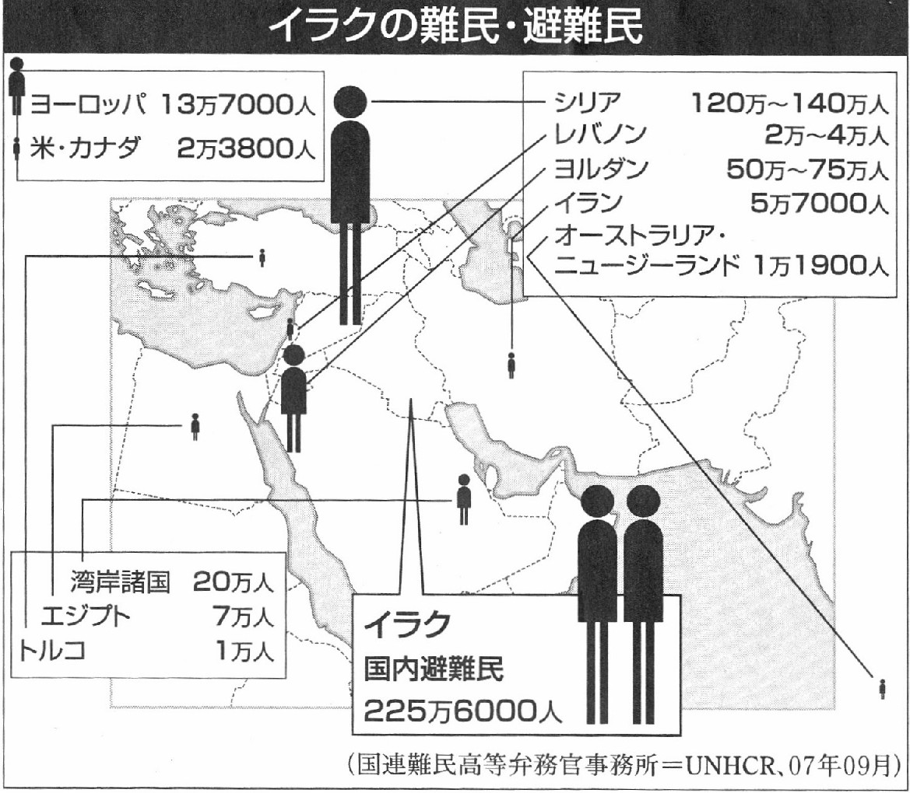
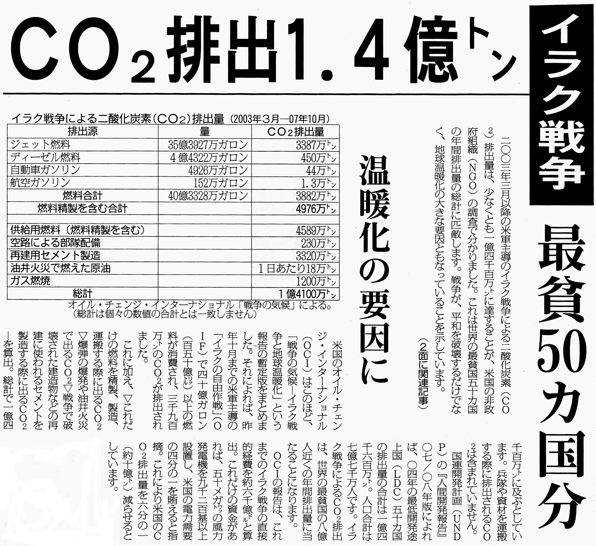

航空自衛隊によるイラクでの空輸活動を 違憲 とした名古屋高裁の判決理由の要旨は次の通り。
【自衛隊のイラク派遣の違憲性について】
イラク特措法は、我が国がイラクにおける人道復興支援活動または安全確保支援活動を行うこと、対応措置の実施は武力による威嚇または武力の行使に当たるものであってはならないこと、我が国領域及び現に戦闘行為（国際的な武力紛争の一環として行われる人を殺傷し、または物を破壊する行為）が行われておらず、かつ、実施される活動の期間を通じて戦闘行為が行われることがないと認められる一定の地域（非戦闘地域）において実施することを規定するものと理解される。
認定できる事実によれば、03年５月のブッシュ大統領による主要な戦闘終結宣言の後にも、米軍を中心とする多国籍軍はファルージャ、バグダッド等の都市で多数の兵員を動員して時に強力な爆弾、化学兵器、残虐兵器等を用い、あるいは戦闘機で激しい空爆を繰り返すなどして武装勢力の掃討作戦をし、武装勢力側も時としてこれに匹敵する強力な兵器を用いて応戦している。
その結果、双方に多数の死者が出るのみならず、子どもたちを含む民間人を多数死傷させ、重大かつ深刻な被害を生じさせている。
武装勢力は単に小規模な襲撃を行う集団ではなく、海外の諸勢力からも援助を受け、米軍の駐留に反対する等の一定の政治的な目的を有していることが認められ、相応の兵力を保持して組織的かつ計画的に抗戦している。
イラク国内は、イラク攻撃後に生じた宗派対立に根ざす武装勢力間の抗争がある上に、各武装勢力と多国籍軍との抗争が複雑に絡み合って泥沼化した戦争の状態だ。米軍がこの５年間に13万～16万人もの兵員をイラクに常駐させ、ベトナム戦争を上回る戦費を負担し、双方に多数の死傷者を出しながら、なお十分な治安の回復がなされていない。
現在は多国籍軍と、国に準ずる組織と認められる武装勢力との間で国内の治安問題にとどまらない武力を用いた争いが行われ、国際的な武力紛争が行われていると言える。
特に首都バグダッドは07年に入ってからも米軍がシーア派及びスンニ派の両武装勢力を標的に掃討作戦を展開し、武装勢力が相応の兵力で対抗しているから、国際的な武力紛争の一環として行われる人を殺傷し、物を破壊する行為が現に行われている地域というべきで、イラク特措法にいう「戦闘地域」に該当すると認められる。
航空自衛隊は米国からの要請を受け、現在に至るまで週４～５回、定期的にクウエートのアリ・アッサーレム空港からバグダッド空港へ武装した多国籍軍の兵員を輸送している。 バグダッド空港は米軍が固く守備をしているとはいえ、現実的な攻撃の可能性がある旨を防衛相が答弁している。
航空自衛隊が多国籍軍の兵員を輸送するに際し、バグダッドでの掃討作戦等の武力行使に関与しない者に限定して輸送している形跡はない。
これらを総合すれば、航空自衛隊の空輸活動は、主としてイラク特撮法上の安全確保支援活動の名目で行われ、それ自体は武力の行使に該当しないとしても、多国籍軍との密接な連携の下で、戦闘行為がなされている地域と地理的に近接した場所で戦闘要員を含むと推認される多国籍軍の武装兵員を定期的かつ確実に輸送していると言える。
現代戦において輸送等の補給活動もまた戦闘行為の重要な要素であることを考慮すれば、多国籍軍の戦闘行為に必要不可欠な軍事上の後方支援を行っているものということができ る。
少なくとも多国籍軍の武装兵員をバグダッドに空輸するものについては、他国による武力行使と一体化した行動で、自らも武力の行使を行ったとの評価を受けざるを得ない。
よって、航空自衛隊の空輸活動は、イラク特措法を合憲とした場合であっても、武力行使を蔡止したイラク特措法２条２項、活動地域を非戦闘地域に限定した同条３項に違反し、かつ憲法９条１項に違反する活動を含んでいると認められる。
【平和的生存権について」
憲法前文に「平和のうちに生存する権利」と表現される平和的生存権は、「戦争と軍備及び戦争準備によって破談されたり侵害ないし抑制されることなく、恐怖と欠乏を免れて平和のうちに生存し、また、そのように平和な国と世界をつくり出していくことのできる核時代の自然権的本質をもつ基本的人権である」などと定義される、極めて多様で幅の広い権利であるということができる。
平和的生存権は、現代において憲法の保障する基本的人権が平和の基盤なしには存立し得ないことからして、すべての基本的人権の基礎にあって、その享有を可能ならしめる基底的権利であるということができ、単に憲法の基本的精神や理念の表明にとどまるものではない。
憲法前文が「平和のうちに生存する権利」を明言している上に、憲法９条が国の行為の側から戦争放棄や戦力不保持を規定していることや、人格権を規定する憲法13条をはじめ、憲法第３章が個別的な基本的人権を規定していることから、平和的生存権は憲法上の法的な権利として認められるべきである。
この平和的生存権は、局面に応じて自由権的、社会権的または参政権的な態様をもって表れる複合的な権利ということができ、裁判所に対してその保護・救済を求め、法的強制措置の発動を請求し得るという意味で、具体的権利性が肯定される場合がある。 憲法９条に違反する国の行為、すなわち戦争の遂行などによって個人の生命、自由が侵害され、現実的な戦争などによる被害や恐怖にさらされるような場合、戦争の遂行への加担・協力を強制されるような場合には、平和的生存権の自由権的な態様の表れとして、裁判所に違憲行為の差し止めや損害賠償請求により救済を求めることができる場合があると解することができ、平和的生存権には具体的権利性がある。
「平和」が抽象的概念であることや、平和の到達点及び達成する手段・方法も多岐多様であるなどを根拠に、平和的生存権の権利性や具体的権利性の可能性を否定する見解があるが、例えば「自由」や「平等」ですら、その達成手段や方法は多岐多様であることからすれば、ひとり平和的生存権のみ、平和概念の抽象性などのためにその法的権利性や具体的権利性の可能性が否定されなければならない理由はない。
【控訴人らの請求について」
本件の違憲確認請求は、ある事実行為が抽象的に違法であることの確認を求めるもので、およそ現在の権利また法律関係に関するものといないから、同請求は確認の益を欠き、不適法だ。
行政権の行使に対し、私人が民事上の給付請求権を有ると解することはできないとは確立された判例で、本件の差し止め請求にかかる訴えは不適法だ。
控訴人らは、それぞれの重い人生や経験などに裏打ちされた強い平和への信念や信条を有しているものであり、憲法９条違反を含む本件派遣によって強い精神的苦痛を被ったとして、本件損害賠償請求を提起しているものと認められる。
そこに込められた切実な思いには、平和憲法下の日本国民として共感すべき部分が多く含まれているということができ、決して、間接民主制下における政治的敗者の個人的な憤慨、不快感または挫折感などにすぎないなどと評価されるべきものではない。
しかし、控訴人らの具体的権利としての平和的生存権が侵害されたとまでは認められず、損害賠償請求において認められるに足りる程度の被侵害利益が生じているということはできない。
よって、控訴人らの本件損害賠償請求はいずれも認められない。
（２００８年４月１８日（金）朝日新聞）
開戦５周年・イラク戦争の総括
 イラク戦争の総括(朝日新聞）
イラク戦争の総括(朝日新聞）Ⅰ、イラク戦争の意義
イラク戦争開始の理由に挙げていたのは嘘や間違いで、大義なき侵略戦争だった。
イラク国民を多数殺傷し、国民生活を破壊し、内戦で混乱を起こさせ、多数のイラク難民が国外に逃れた。
 イラク難民数
{kind=link}
「有志連合」「多国籍軍」を派遣した国では開戦批判や反戦運動が起こり、政権交代も起こった。
アメリカの国際的地位が低下した。戦費は３兆ドル（約300兆円、日本の国家予算の3年半分）との
試算もあり、ドル安と赤字財政で世界経済にも負担を強いている。
A.アメリカの国内事情
・2002年9月11日にニューヨークなどに同時多発テロが発生し、2973人が殺された。
・この年、11月ー12月にアメリカ大統領選挙があり、ブッシュ大統領の当選に疑義が出ていた。
・ブッシュ大統領は権力の保持を目指し、最高軍司令官としてイラク戦争を起こし、
マスコミを巻き込み、アメリカ国民の忠誠と支持を得た。
B. 開戦の理由として、大きくは２つ～4つ挙げられた。
１、イラクが大量破壊兵器（核爆弾および毒ガス兵器）を保持し、隠している。
２、「9・11 同時多発テロ」はアルカイダの仕業であり、
イラクのフセイン大統領がアルカイダを保護し、後ろで支援している。
３、イラクを放置すれば、再び「9.11テロ」がおこるので、
防止するために先制攻撃の「反テロ戦争」をする。
４、イラクのフセイン大統領の独裁政治を倒し、イラクの人権と自由を回復する。
C. 「暴かれたうそ」＝正義なきイラク戦争
１、「大量破壊兵器の存在について」
《ブッシュ米大統領のうそ》
「イラクが大量破壊兵器を保持し、隠しているのは間違いない」（2003年3月17日、対イラク最後通告）
ブッシュ米大統領「情報の多くが誤りだったことが判明したのは事実だ」（05年12月）
《ブレア英首相の反省》
「サダム・フセイン・イラク元大統領が生物・科学兵器を保有しているとの証拠は間違っていたことがわかった。私はこれを認め、受け入れる」(04年9月)
２、「アルカイダの関与について」
《ブッシュ米大統領のうそ》
「情報面などから得た証拠は、フセインがテロ組織アルカイダのメンバーを合むテロリストを支援し、保護していることを示している。彼は秘密裏に、隠匿した兵器をテロリストに提供することができる」（03年1月30日、一般教書演説）
《米議会報告書》
「サダム・フセインは、アルカイダに不審を抱き、イスラム過激派を政権に対する脅威とみなして、アルカイダが物的支援や活動上の支援を要求するのをすべて拒否していた」（06年9月8日、米上院情報特別委員会の報告書）
Ⅱ、多国籍軍
米軍は増派。英･豪など削減
イラク開戦を主導した米英は、国連安全保障理事会での武力行使容認決議の取り付けを断念したため、参加国は「有志連合」と呼ぱれた。
当初、米英以外に戦闘に加わったのは、特殊部隊を派遣したオーストラリアとポーランドにとどまった。
04年６月に採択された国連安保理決議により、イラク側の要請に基づいて駐留し、
武力行使を伴う治安維持や人道支援活動に当たる「多国籍軍」と規定された。
同年末までに米・英・豪・ポーランド軍のほか、イタリア、韓国、オランダ、 日本など約30カ国、計約16万人の部隊がイラクに駐留した。
その後、05年４月にオランダ、06年12月にイタリアがイラクでの活動を終了した。
首都バグダッドなどの治安改善が進まぬなか、ブッシュ米大統領は07年１月、
13万人規模のイラク駐留米軍の約３万人の増派を発表。
一方でブラウン英首相は同年10月、５千人規模の駐留英軍を2500人規模に削減すると発表した。
ブレア前首相の対米追従路線からかじを切った。
同年11月、イラク開戦当初から部隊を派遣していたポーランドとオーストラリアで相次ぎ政権が交代。
ポーランドのトゥスク首相は08年中に約900人の部隊の完全撤退を表明した。オーストラリアのラッド首相も1500人規模のうち約550人の08年半ばまでの撤退方針を示している。
■部隊を派遣している国・・・主要国は殆ど派遣していない。援助と引き換えの派兵。
米国、英国、アゼルバイジャン、アルバ二ア、アルメニア、ウクライナ、
エストニア、カザフスタン、グルジア、チェコ、デンマーク、ブルガリア、
ボスニア・ヘルツェゴビナ、ポーランド、マケドニア、モルドバ、ラトビア、
リトアニア、ルーマニア、韓国、シンガポール、モンゴル、オーストラリア、
フィジー、エルサルバドル、日本。
（３月６日現在、外務省調べ）
（しんぶん赤旗 2008.3.20.）
Ⅲ、イラク戦争の犠牲者数
《イラク人の死者数》
＊イラク保健省と世界保健機関（ＷＨＯ）合同調査（08年１月９日発表）
（06年６月までの死者〉 推計的15万人
＊英医学誌『ランセット』（06年10月）
〈聞き取り調査をもとに） 推計65万人
＊英調査会社オピニオンリサーチビジネスとイラク調査会社の調査（08年１月30日発表）
（約2400人への対面調査をもとに推計〉 100万人以上
＊イラク・ボディー・カウント（08年３月18日現在）
民間人 82199人-89710人
軍人 4900人-6375人
《米軍・有志連合国兵士の死者》
＊イラク･ボディー･カウント
米軍兵士 3987人
英軍兵士 175人
その他の国 134人
イラクではこれまでに１００万人以上が犠牲となり、５００万人近くが難民・避難民化したといわれています。
国連の人道問題担当調整官は今年２月、イラク人４００万人が飢餓に直面し、国民の４割が安全な水を得ることができず、国内避難民が０６年の約２倍の２５０万人にのぼったと報告しました。
さらに、ヨルダン紙アッドストールは、イラクの人□（約２９００万人）に近い
２７００万発の地雷が全土に敷設されていると報じ、被害の深刻さを伝えています。
（しんぶん赤旗 2008.3.20.）
 イラク戦争でのCO2排出量
{kind=link}
CO2排出量＝1.4 億トン ＝最貧国５０ヵ国分に相当＝地球温暖化の要因に
（しんぶん赤旗 2008.8.6.）
戦後の反戦平和運動 へ
トップページに戻る